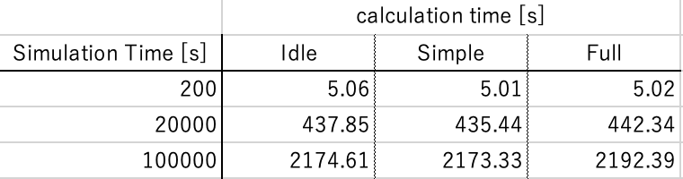
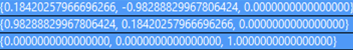
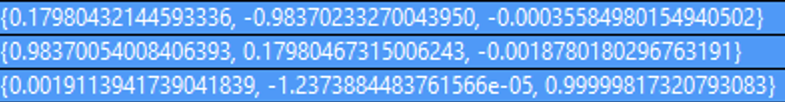

Specification of Earth Rotation
1. Overview
1. Functions
- The
EarthRotationclass calculates the rotational motion of the Earth.
2. Related files
src/environment/global/earth_rotation.cpp, .hppEarthRotationclass is defined here.
src/environment/global/celestial_information.cpp, .hppEarthRotationclass is used here.
3. How to use
- Make an instance of the
EarthRotationclass inCelestialInformationclass. - Select rotation mode in
sample_simulation_base.iniIDLE: no motion ( $\mathrm{DCM_{ECItoECEF}}$ is set as the unit matrix)- If the rotation mode input is neither
FULLnorSIMPLE, theIDLEmode is set.
- If the rotation mode input is neither
SIMPLE: axial rotation only ( $\mathrm{DCM_{ECItoECEF}} = \bf{R}$ )FULL: Precession and Nutation are taken into account ( $\mathrm{DCM_{ECItoECEF}} = \bf{R}\bf{N}\bf{P}$ )- $\bf{R}$, $\bf{N}$, $\bf{P}$ stand for the DCM of axial rotation, nutation, precession, respectively.
2. Explanation of Algorithm
The algorithm is based on IERS Conventions 2003.
1. Update
1. overview
- This function calculates the coordinate transformation from ECI to ECEF, calling
RotationandPrecessionandNutationfunctions. \[ \mathrm{DCM_{ECItoECEF}} = \bf{R}\bf{N}\bf{P} \] - where $\bf{R}$, $\bf{N}$, $\bf{P}$ stand for the DCM of axial rotation, nutation, precession, respectively.
2. inputs and outputs
- Input
- Julian date
- Output
- the DCM of the coordinate transformation from ECI to ECEF
3. algorithm
\[ \mathrm{jdTT} = \mathrm{julian, date} + \mathrm{dtUT1UTC} \]
- where Julian date is the input, dtUT1UTC is the time difference between UT1 and UTC
- dtUT1UTC = 32.184 [s]
\[ \mathrm{tTT} = \frac{\mathrm{jdTT} - \mathrm{JDJ2000}}{\mathrm{JC}} \]
-
where tTT is Julian century for terrestrial time, JDJ2000 is Julian Date @ J2000, JC is Julian Century
- JDJ2000 = 2451545.0 [day]
- JC = 36525 [day/century]
-
By using tTT, we get the DCM of precession ( $\bf{P}$ ) and nutation ( $\bf{N}$ ) with
PrecessionandNutationfunctions. -
$\varepsilon$, $\Delta \varepsilon$, $\Delta \psi$ are calculated in
Nutationfunction.
\[ \begin{align} \mathrm{E_q} &= \Delta \psi \cos{(\varepsilon + \Delta \varepsilon)} \\ \mathrm{GAST} &= \mathrm{GMST} + \mathrm{E_q} \end{align} \]
-
where GAST is Greenwich Apparent Sidereal Time, GMST is Greenwich Mean Sidereal Time
-
GAST is calculated from julian date in
gstimefunction insrc/Library/sgp4/sgp4unit.h. -
By using GMST, We get the DCM of axial rotation ( $\bf{R}$ ) with the
Rotationfunction. The coordinate transformation from ECI to ECEF is calculated. \[ \mathrm{DCM_{ECItoECEF}} = \bf{R}\bf{N}\bf{P} \]
4. note
- If rotation mode is
Simple, only axial rotation is calculated.
2. AxialRotation
1. overview
- This function calculates the axial rotation of the central object.
2. inputs and outputs
- Input
- Greenwich Apparent Sidereal Time (GAST)
- Output
- the DCM of axial rotation ( $\bf{R}$ )
3. algorithm
\[ \bf{R} = \begin{pmatrix} \cos{\mathrm{(GAST)}} & \sin{\mathrm{(GAST)}} & 0 \\
- \sin{\mathrm{(GAST)}} & \cos{\mathrm{(GAST)}} & 0 \\ 0 & 0 & 1 \end{pmatrix} \]
3. Precession
1. overview
- This function calculates the precession of the central object.
2. inputs and outputs
- Input
- Julian century for terrestrial time (tTT)
- Output
- the DCM of precession ( $\bf{P}$ )
3. algorithm
- Precession angles are calculated as follows.
\[ \begin{align} \zeta &= 2306.2181" \mathrm{tTT} + 0.30188" \mathrm{tTT}^2 + 0.017998" \mathrm{tTT}^3 \\ \theta &= 2004.3109" \mathrm{tTT} - 0.42665" \mathrm{tTT}^2 - 0.041833" \mathrm{tTT}^3 \\ z &= 2306.2181" \mathrm{tTT} + 1.09468" \mathrm{tTT}^2 + 0.018203" \mathrm{tTT}^3 \\ \end{align} \] \[ \bf{P} = \begin{pmatrix} \cos{(-z)} & \sin{(-z)} & 0 \\- \sin{(-z)} & \cos{(-z)} & 0 \\ 0 & 0 & 1 \end{pmatrix} \begin{pmatrix} \cos{\theta} & 0 & - \sin{\theta} \\ 0 & 1 & 0 \\ \sin{\theta} & 0 & \cos{\theta} \end{pmatrix} \begin{pmatrix} \cos{(-\zeta)} & \sin{(-\zeta)} & 0 \\
- \sin{(-\zeta)} & \cos{(-\zeta)} & 0 \\ 0 & 0 & 1 \end{pmatrix} \]
4. Nutation
1. overview
- This function calculates the nutation of the central object.
2. inputs and outputs
- Input
- Julian century for terrestrial time (tTT)
- Output
- Return: the DCM of precession ( $\bf{N}$ )
- $\varepsilon$: mean obliquity of the ecliptic
- $\Delta \varepsilon$: nutation in obliquity
- $\Delta \psi$: nutation in longitude
3. algorithm
Delaunay angles are calculated as follows. \[ \begin{align} l &= 134.96340251^\circ + 1717915923.2178"\mathrm{tTT} + 31.8792"\mathrm{tTT}^2 + 0.051635"\mathrm{tTT}^3 - 0.00024470"\mathrm{tTT}^4 \\ l' &= 357.52910918^\circ + 129596581.0481"\mathrm{tTT} - 0.5532"\mathrm{tTT}^2 + 0.000136"\mathrm{tTT}^3 - 0.00001149"\mathrm{tTT}^4 \\ F &= 93.27209062^\circ + 1739527262.8478"\mathrm{tTT} - 12.7512"\mathrm{tTT}^2 - 0.001037"\mathrm{tTT}^3 + 0.00000417"\mathrm{tTT}^4 \\ D &= 297.85019547^\circ + 1602961601.2090"\mathrm{tTT} - 6.3706"\mathrm{tTT}^2+0.006593"\mathrm{tTT}^3 -0.00003169"\mathrm{tTT}^4 \\ \Omega &= 125.04455501^\circ - 6962890.5431"\mathrm{tTT} + 7.4722"\mathrm{tTT}^2+0.007702"\mathrm{tTT}^3-0.00005939"\mathrm{tTT}^4 \\ \end{align} \]
- l : mean anomaly of the moon
- l' : mean anomaly of the sun
- F : mean argument of latitude of the moon
- D : mean elongation of the moon from the sun
- $\Omega$ : mean longitude of ascending node of the moon
$\varepsilon$ and $\Delta \varepsilon$ and $\Delta \psi$ are calculated as follows.
\[ \begin{align} \varepsilon &= 23^\circ26'21".448 - 46".8150\mathrm{tTT} - 0".00059\mathrm{tTT}^2 + 0".001813\mathrm{tTT}^3 \\ \Delta \epsilon &= 9.205\cos{\Omega} + 0.573\cos{2L'} - 0.090\cos{2\Omega} + 0.098\cos{2L}+0.007\cos{l'} - 0.001\cos{l} + 0.022\cos{(2L'+l')} + 0.013\cos{(2L+l)}-0.010\cos({2L'-l')} , [\mathrm{arcsec}] \\ \Delta \psi &= -17.206\sin{\Omega} - 1.317\sin{2L'} + 0.207\sin{2\Omega} - 0.228\sin{2L} + 0.148\sin{l'}+0.071\sin{l}-0.052\sin{(2L'+l')} - 0.030\sin{(2L+l)}+0.022\sin{(2L'-l')} , [\mathrm{arcsec}] \\ \end{align} \]
where $L = F + \Omega$，$L' = L - D$
\[ \bf{N} = \begin{pmatrix} 1 & 0 & 0 \\ 0 & \cos{\left(-(\varepsilon + \Delta \varepsilon)\right)} & \sin{\left(-(\varepsilon + \Delta \varepsilon)\right)} \\ 0 & - \sin{\left(-(\varepsilon + \Delta \varepsilon)\right)} & \cos{\left(-(\varepsilon + \Delta \varepsilon)\right)} \end{pmatrix} \begin{pmatrix} \cos{(-\Delta \psi)} & \sin{(-\Delta \psi)} & 0 \\
- \sin{(-\Delta \psi)} & \cos{(-\Delta \psi)} & 0 \\ 0 & 0 & 1 \end{pmatrix} \begin{pmatrix} 1 & 0 & 0 \\ 0 & \cos{\varepsilon} & \sin{\varepsilon} \ 0 & - \sin{\varepsilon} & \cos{\varepsilon} \end{pmatrix} \]
3. Results of verifications
1. $\mathrm{DCM_{ECItoECEF}}$ calculation in Update function
1. overview
- The $\mathrm{DCM_{ECItoECEF}}$ calculation is compared with Matlab's dcmeci2ecef function
2. conditions for the verification
- input value
- Simulation time
- 200, 20000, 100000 [s]
- other conditions
- default initialize files
- UTC = 2020/01/01 12:00:00
- Step Time 0.1 [s]
- default initialize files
- Simulation time
3. results
-
Results of calculation time in S2E

If you want to reduce the calculation time, it is recommended to select Simple mode rather than Idle mode. Note again that if the rotation mode input is neither Full nor Simple, the Idle mode is set.
-
Results of S2E in
Simplerotation mode -
Results of S2E in
Fullrotation mode -
Results of Matlab

The results of Full rotation mode and Matlab agree well. Note that Matlab is based on the IAU-2000/2005 reference system, while S2E is based on IERS Conventions 2003.
4. References
- 天体の回転運動理論入門講義ノート, 福島 登志夫, 2007.(written in Japanese)
- 天体の位置計算, 長沢 工, 2001.(written in Japanese)
- IERS Conventions 2003, D. D. McCarthy and G Petit, 2003.
- MATLAB dcmeci2ecef, retrieved June 18, 2021.